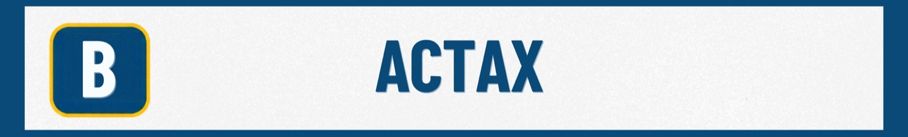

One brand system
I carried Actax's green-and-blue identity across every format.
I handle marketing for Actax, a San Jose tax and insurance practice. This case study covers five pieces I designed to help clients find services, hours, and contact details quickly.
Actax serves clients in tax, insurance, and Covered California enrollment. Each has its own audience and season. The practice needed print materials that looked like one brand and made the next step obvious: call, scan, or walk in.
I carried Actax's green-and-blue identity across every format.
Signage reads from the corridor and street. Postcards work as handouts and mailers. Banners suit storefront and events.
Each piece leads with the phone number and a QR code.
Five print and outdoor pieces. Click any card to open the full PDF.

Entrance signage for Suite 200, designed to be read from the corridor and street.
Open full PDF →
Covered California enrollment and coverage offer, with phone, QR code, and service icons up front.
Open full PDF →Six-service grid with hours, QR code, and contact details, made for handouts and mailers.
Open full PDF →
Combined tax and insurance message with a QR code for walk-up traffic.
Open full PDF →
Enrollment banner with a bold Free Assistance bar and a phone number legible from a distance.
Open full PDF →